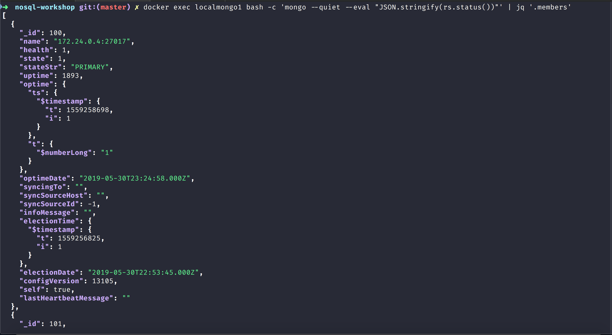
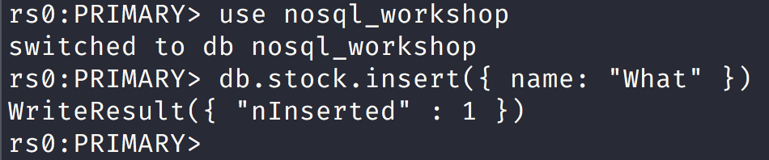

NoSQL Workshop - Mongo Change Streams
Sections:
- Definition of Change Streams
- Change Streams Production Recommendations
- Change Events
- Bread Crumb Navigation
Definition of Change Streams
Change streams allow applications to access real-time data changes without the complexity and risk of tailing the oplog. Applications can use change streams to subscribe to all data changes on a single collection, a database, or an entire deployment, and immediately react to them. Because change streams use the aggregation framework, applications can also filter for specific changes or transform the notifications at will.
Watch Collection/Database/Deployment
Change Streams Production Recommendations
Change Streams Production Recommendations
Change Events
Creating 3 node replica set with docker run instructions
Create a network first:
docker network create my-mongo-cluster
Now let us create 3 separate containers with the following commands:
> docker run --name mongo-node1 -d --net my-mongo-cluster mongo:4.0.5 --replSet "rs0"
> docker run --name mongo-node2 -d --net my-mongo-cluster mongo:4.0.5 --replSet "rs0"
> docker run --name mongo-node3 -d --net my-mongo-cluster mongo:4.0.5 --replSet "rs0"
Next let us get into the mongo-node1 container with the following command like this:
docker exec -it mongo-node1 mongo
Next let us initiate a replica set with the following configuration options:
config = {
"_id" : "rs0",
"members" : [
{
"_id" : 0,
"host" : "mongo-node1:27017"
},
{
"_id" : 1,
"host" : "mongo-node2:27017"
},
{
"_id" : 2,
"host" : "mongo-node3:27017"
}
]
}
Then we can simply do: rs.initiate(config)
Creating 3 node replica set with docker-compose yml script
Run the following docker-compose command at the root:
docker-compose build
docker-compose up
Next assuming that 3 docker containers are created you can get into the primary like this:
docker exec -it localmongo1 mongo
You can monitor the secondary replica set like this:
docker exec -it localmongo2 mongo
Example using mongodb change stream blog post
The mongodb blog has a good introductory blog post on using change streams that you can find at An Introduction to Change Streams
I also used and adapted the code in this github repository: mongodb-node-changestreams-sample
Make sure that you have a 3 node replicaset and primary running and as a sanity check you should see something like this:

You can check which node is the primary with this command:
docker exec localmongo1 bash -c 'mongo --eval "rs.status()"'
You will see a bson blob like this:
{
"set" : "rs0",
"date" : ISODate("2019-05-30T23:18:01.179Z"),
"myState" : 1,
"term" : NumberLong(1),
"syncingTo" : "",
"syncSourceHost" : "",
"syncSourceId" : -1,
"heartbeatIntervalMillis" : NumberLong(2000),
"optimes" : {
"lastCommittedOpTime" : {
"ts" : Timestamp(1559258277, 1),
"t" : NumberLong(1)
},
"readConcernMajorityOpTime" : {
"ts" : Timestamp(1559258277, 1),
"t" : NumberLong(1)
},
"appliedOpTime" : {
"ts" : Timestamp(1559258277, 1),
"t" : NumberLong(1)
},
"durableOpTime" : {
"ts" : Timestamp(1559258277, 1),
"t" : NumberLong(1)
}
},
"lastStableCheckpointTimestamp" : Timestamp(1559258267, 1),
"members" : [
{
"_id" : 100,
"name" : "172.24.0.4:27017",
"health" : 1,
"state" : 1,
"stateStr" : "PRIMARY",
"uptime" : 1467,
"optime" : {
"ts" : Timestamp(1559258277, 1),
"t" : NumberLong(1)
},
"optimeDate" : ISODate("2019-05-30T23:17:57Z"),
"syncingTo" : "",
"syncSourceHost" : "",
"syncSourceId" : -1,
"infoMessage" : "",
"electionTime" : Timestamp(1559256825, 1),
"electionDate" : ISODate("2019-05-30T22:53:45Z"),
"configVersion" : 13105,
"self" : true,
"lastHeartbeatMessage" : ""
},
{
"_id" : 101,
"name" : "172.24.0.3:27017",
"health" : 1,
"state" : 2,
"stateStr" : "SECONDARY",
"uptime" : 1465,
"optime" : {
"ts" : Timestamp(1559258277, 1),
"t" : NumberLong(1)
},
"optimeDurable" : {
"ts" : Timestamp(1559258277, 1),
"t" : NumberLong(1)
},
"optimeDate" : ISODate("2019-05-30T23:17:57Z"),
"optimeDurableDate" : ISODate("2019-05-30T23:17:57Z"),
"lastHeartbeat" : ISODate("2019-05-30T23:17:59.456Z"),
"lastHeartbeatRecv" : ISODate("2019-05-30T23:18:00.411Z"),
"pingMs" : NumberLong(0),
"lastHeartbeatMessage" : "",
"syncingTo" : "172.24.0.4:27017",
"syncSourceHost" : "172.24.0.4:27017",
"syncSourceId" : 100,
"infoMessage" : "",
"configVersion" : 13105
},
{
"_id" : 102,
"name" : "172.24.0.2:27017",
"health" : 1,
"state" : 2,
"stateStr" : "SECONDARY",
"uptime" : 1465,
"optime" : {
"ts" : Timestamp(1559258277, 1),
"t" : NumberLong(1)
},
"optimeDurable" : {
"ts" : Timestamp(1559258277, 1),
"t" : NumberLong(1)
},
"optimeDate" : ISODate("2019-05-30T23:17:57Z"),
"optimeDurableDate" : ISODate("2019-05-30T23:17:57Z"),
"lastHeartbeat" : ISODate("2019-05-30T23:17:59.457Z"),
"lastHeartbeatRecv" : ISODate("2019-05-30T23:18:00.412Z"),
"pingMs" : NumberLong(0),
"lastHeartbeatMessage" : "",
"syncingTo" : "172.24.0.4:27017",
"syncSourceHost" : "172.24.0.4:27017",
"syncSourceId" : 100,
"infoMessage" : "",
"configVersion" : 13105
}
],
"ok" : 1,
"operationTime" : Timestamp(1559258277, 1),
"$clusterTime" : {
"clusterTime" : Timestamp(1559258277, 1),
"signature" : {
"hash" : BinData(0,"AAAAAAAAAAAAAAAAAAAAAAAAAAA="),
"keyId" : NumberLong(0)
}
}
}
We can use the jq json parser to just get the list of members like this:
docker exec localmongo1 bash -c 'mongo --quiet --eval "JSON.stringify(rs.status())"' | jq '.members'

We can get change stream working in the shell by doing the following:
docker exec -it localmongo1 mongo this command will get you into the primary and load mongo shell.
Next you need to switch to nosql_workshop in mongo shell:
use nosql_workshop
Then you need to load the following script:
"use strict";
// Original Code for this is from:
// https://github.com/rlondner/mongodb-node-changestreams-sample/tree/master/shell
// This example is based out of mongodb blog post:
// https://www.mongodb.com/blog/post/an-introduction-to-change-streams
var CONNECTION_STRING = "mongodb://localhost:27017/nosql_workshop?replicaSet=rs0";
var db = connect(CONNECTION_STRING);
var collection = db.stock;
var changeStreamCursor = collection.watch();
pollStream(changeStreamCursor);
//this function polls a change stream and prints out each change as it comes in
function pollStream(cursor) {
while (!cursor.isExhausted()) {
if (cursor.hasNext()) {
var change = cursor.next();
print(JSON.stringify(change));
}
}
pollStream(cursor);
}
You can load the change stream script in the primary replicaset node like this:
load('/usr/src/configs/change-stream.js')
Then inside another shell session get into the primary node like this again:
docker exec -it localmongo1 mongo

You will then see a message like this in the primary replica set:
{
"_id": {
"_data": "825CF094FB0000000229295A10047BD0B4FEAA254B5E9C3ED88E9A0477E046645F696400645CF094FB9A7A0E082A335F540004"
},
"operationType": "insert",
"clusterTime": {
"$timestamp": {
"t": 1559270651,
"i": 2
}
},
"fullDocument": {
"_id": {
"$oid": "5cf094fb9a7a0e082a335f54"
},
"name": "What"
},
"ns": {
"db": "nosql_workshop",
"coll": "stock"
},
"documentKey": {
"_id": {
"$oid": "5cf094fb9a7a0e082a335f54"
}
}
}
Bread Crumb Navigation
| Previous | Next |
|---|---|
| ← MongoDB Security | MongoDB Replication → |